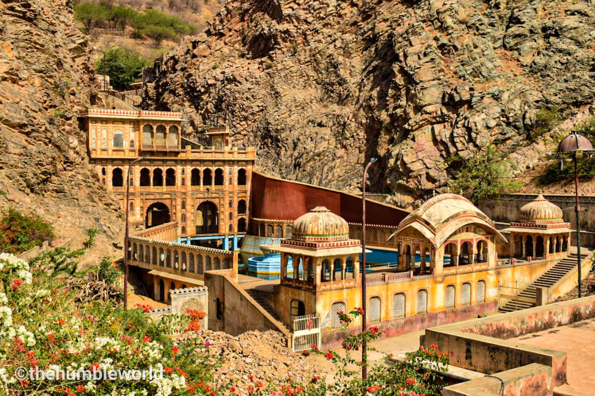

Galtaji is an ancient Hindu pilgrimage in the Indian state of Rajasthan, about 10 km from Jaipur. The site consists of a series of temples built in the ring of hills surrounding Jaipur in a narrow crevice. A natural spring emerges high on the hill and flows downward, filling a series of holy kunds where pilgrims bathe. Visitors and pilgrims can ascend the crevasse, continue past the highest water pool to a hilltop temple from where there are views of Jaipur and its fortifications spread over the valley floor. A Saint named Galav is believed to have lived here, practised meditation, and did penance (Tapasya).The magnificent pink sandstone structure is said to have been built by Diwan Rao Kriparam who was a Sawai Jai Singh II courtier. Galtaji has been a haven for the puritans belonging to the Ramanadi sect and under the occupation of the Jogis since the early 16th century.
